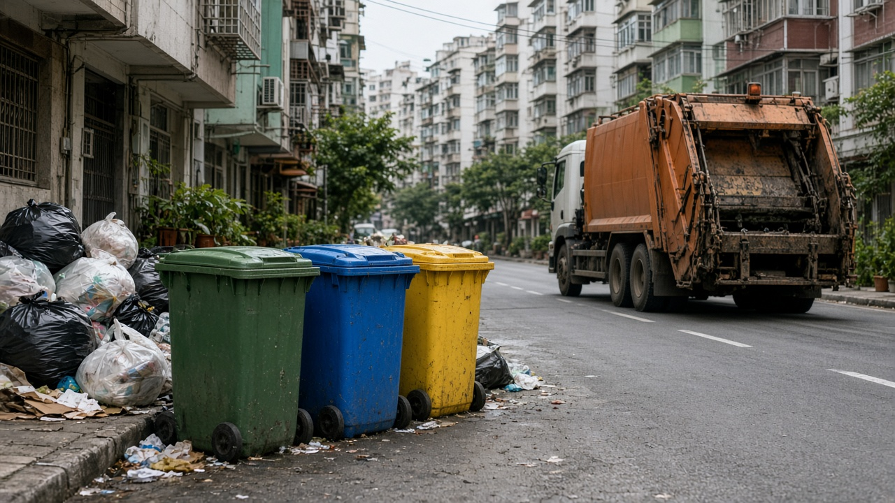
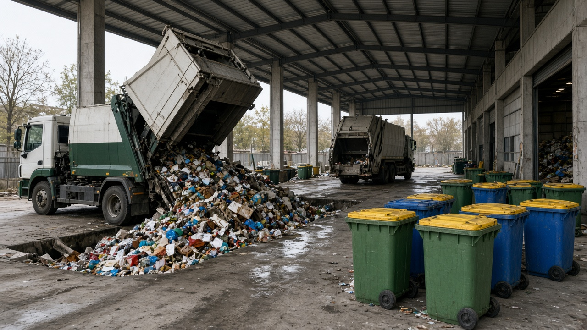
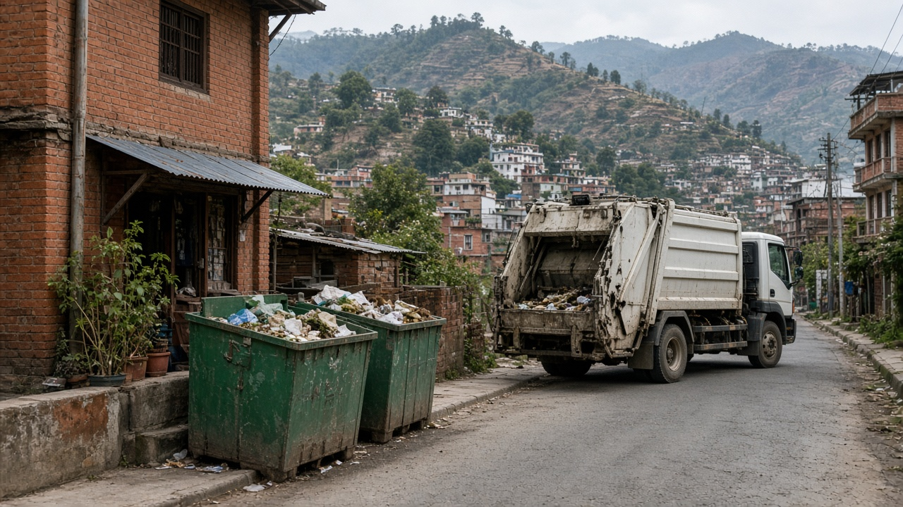

Municipal Solid Waste in Urban Areas
Published on August 19, 2026

Municipal solid waste (MSW) in urban areas includes everyday discards from households, shops, offices, and institutions—typically food scraps, paper, plastics, metals, glass, textiles, and garden trimmings. Rapid population growth, rising consumption, and single-use packaging have pushed per-capita waste generation to record levels in cities across Asia, Africa, and Latin America. In many municipalities, collection coverage remains incomplete, informal dumps proliferate along roadsides and riverbanks, and seasonal monsoon rains wash litter into drainage systems, causing floods and water contamination that affect public health and urban livability.
Effective urban MSW management requires integrated systems spanning source separation, door-to-door collection, transfer stations, recycling facilities, composting plants, and sanitary landfills or recovery centers. Cities such as San Francisco, Seoul, and Pune demonstrate that high diversion rates are achievable when residents receive clear bins, regular schedules, and enforcement against illegal dumping. Informal waste pickers play a vital role in many developing cities by recovering recyclables, yet they often work without safety equipment, fair wages, or legal recognition. Formalizing their contribution through cooperatives and inclusive policy can improve both livelihoods and recycling outcomes.
Urban planners must align waste infrastructure with land-use zoning, transport networks, and climate resilience goals. Smart technologies—including GPS-tracked collection vehicles, fill-level sensors in bins, and data dashboards—help optimize routes and reduce fuel use. Extended producer responsibility and plastic bans address waste at its source, while public education campaigns shift behavior toward reduction and reuse. As cities densify, sustainable MSW systems become essential for clean air, safe water, reduced greenhouse-gas emissions, and the dignity of communities living near disposal sites.

शहरी क्षेत्रहरूमा नगरपालिका ठोस फोहोर (MSW) ले घर, पसल, कार्यालय र संस्थाहरूबाट दैनिक फालिएका सामग्री—जस्तै खानेकुराको बाँकी, कागज, प्लास्टिक, धातु, गिलास, कपडा र बगैंचाको काटिएको भाग—समेट्छ। जनसङ्ख्या वृद्धि, बढ्दो उपभोग र एक पटक प्रयोग प्याकेजिङले एसिया, अफ्रिका र लातिन अमेरिका का शहरहरूमा प्रति व्यक्ति फोहोर उत्पादन रेकर्ड स्तरमा पुर्याएको छ। धेरै नगरपालिकामा सङ्कलन समेट अपूर्ण छ, सडक छेउ र नदी किनारमा अनौपचारिक डम्प फैलिएका छन्, र मनसुन पानीले फोहोरलाई नाला प्रणालीमा बगाएर बाढी र पानी प्रदूषण गर्छ, जसले सार्वजनिक स्वास्थ्य र शहरी जीवनयापनमा असर पार्छ।
प्रभावकारी शहरी नगरपालिका ठोस फोहोर व्यवस्थापनका लागि स्रोत छुट्याउने, घर-घर सङ्कलन, हस्तान्तरण केन्द्र, पुन: चक्रण सुविधा, कम्पोस्टिङ संयन्त्र र स्वच्छ ल्यान्डफिल वा पुन: प्राप्ति केन्द्रसम्म एकीकृत प्रणाली चाहिन्छ। सान फ्रान्सिस्को, सियोल र पुणे जस्ता शहरहरूले स्पष्ट डब्बा, नियमित तालिका र अवैध फाल्न रोक्ने कार्यान्वयन भएमा उच्च विचलन दर सम्भव छ भनी देखाएका छन्। अनौपचारिक फोहोर संकलकहरूले धेरै विकासशील शहरहरूमा पुन: चक्रणयोग्य सामग्री पुन: प्राप्त गर्न महत्त्वपूर्ण भूमिका खेल्छन्, तर प्रायः सुरक्षा उपकरण, न्यायोचित पारिश्रमिक वा कानुनी मान्यता बिना काम गर्छन्। सहकारी र समावेशी नीतिमार्फत उनीहरूको योगदान औपचारिक बनाउँदा जीविकोपार्जन र पुन: चक्रण दुवै सुधार हुन्छ।
शहरी योजनाकारहरूले फोहोर पूर्वाधारलाई भू-उपयोग जोनिङ, यातायात नेटवर्क र जलवायु लचिलोपन लक्ष्यसँग मेल खाउनुपर्छ। जीपीएस-ट्र्याक गरिएका सङ्कलन सवारी, डब्बामा भराइ-स्तर सेन्सर र डाटा ड्यासबोर्ड जस्ता स्मार्ट प्रविधिहरूले मार्ग अनुकूलन र इन्धन खपत घटाउँछ। विस्तारित उत्पादक जिम्मेवारी र प्लास्टिक प्रतिबन्धले स्रोतमै फोहोर सम्बोधन गर्छ, भने सार्वजनिक शिक्षा अभियानले घटाउने र पुन: प्रयोगतर्फ व्यवहार परिवर्तन गर्छ। शहरहरू सघान हुँदै गएकाले, दिगो नगरपालिका ठोस फोहोर प्रणाली स्वच्छ वायु, सुरक्षित पानी, घटेको ग्रीनहाउस ग्यास उत्सर्जन र फाल्ने स्थल नजिक बस्ने समुदायको सम्मानका लागि अनिवार्य बन्दैछ।

शहरी क्षेत्रों में नगरपालिका ठोस कचरा (MSW) घरों, दुकानों, कार्यालयों और संस्थानों से रोज़ाना फेंके जाने वाले पदार्थ—जैसे खाद्य अवशेष, कागज, प्लास्टिक, धातु, काँच, कपड़े और बगीचे की कटाई—को शामिल करता है। तेज़ जनसंख्या वृद्धि, बढ़ता उपभोग और एक-बार प्रयोग वाली पैकेजिंग ने एशिया, अफ़्रीका और लातिन अमेरिका के शहरों में प्रति व्यक्ति कचरा उत्पादन को रिकॉर्ड स्तर पर पहुँचा दिया है। कई नगरपालिकाओं में संग्रह पहुँच अधूरी है, सड़क किनारों और नदी तटों पर अनौपचारिक डंप फैले हैं, और मानसून की बारिश कचरे को नाली प्रणाली में बहाकर बाढ़ और जल प्रदूषण करती है, जो सार्वजनिक स्वास्थ्य और शहरी जीवन को प्रभावित करती है।
प्रभावी शहरी नगरपालिका ठोस कचरा प्रबंधन के लिए स्रोत पृथक्करण, दरवाज़े-दरवाज़े संग्रह, हस्तांतरण केंद्र, पुन: चक्रण सुविधाएँ, खाद बनाने के संयंत्र और स्वच्छ लैंडफिल या पुन: प्राप्ति केंद्रों तक एकीकृत प्रणाली चाहिए। सान फ्रान्सिस्को, सियोल और पुणे जैसे शहरों ने दिखाया है कि स्पष्ट डिब्बे, नियमित समय-सारिणी और अवैध फेंकने पर कार्रवाई से उच्च विचलन दर संभव है। अनौपचारिक कचरा संग्राहक कई विकासशील शहरों में पुन: चक्रण योग्य सामग्री निकालने में महत्वपूर्ण भूमिका निभाते हैं, लेकिन अक्सर सुरक्षा उपकरण, उचित मजदूरी या कानूनी मान्यता के बिना काम करते हैं। सहकारी समितियों और समावेशी नीति से उनके योगदान को औपचारिक बनाने से आजीविका और पुन: चक्रण दोनों सुधरते हैं।
शहरी योजनाकारों को कचरा अवसंरचना को भू-उपयोग ज़ोनिंग, परिवहन नेटवर्क और जलवायु लचीलापन लक्ष्यों के साथ संरेखित करना चाहिए। जीपीएस-ट्रैक किए गए संग्रह वाहन, डिब्बों में भराई-स्तर सेंसर और डेटा डैशबोर्ड जैसी स्मार्ट तकनीकें मार्ग अनुकूलन और ईंधन खपत घटाने में मदद करती हैं। विस्तारित उत्पादक जिम्मेदारी और प्लास्टिक प्रतिबंध स्रोत पर कचरे को संबोधित करते हैं, जबकि सार्वजनिक शिक्षा अभियान कमी और पुन: उपयोग की ओर व्यवहार बदलते हैं। शहरों के सघन होने के साथ, टिकाऊ नगरपालिका ठोस कचरा प्रणालियाँ स्वच्छ हवा, सुरक्षित जल, कम ग्रीनहाउस गैस उत्सर्जन और निपटान स्थलों के पास रहने वाले समुदायों की गरिमा के लिए आवश्यक हो जाती हैं।